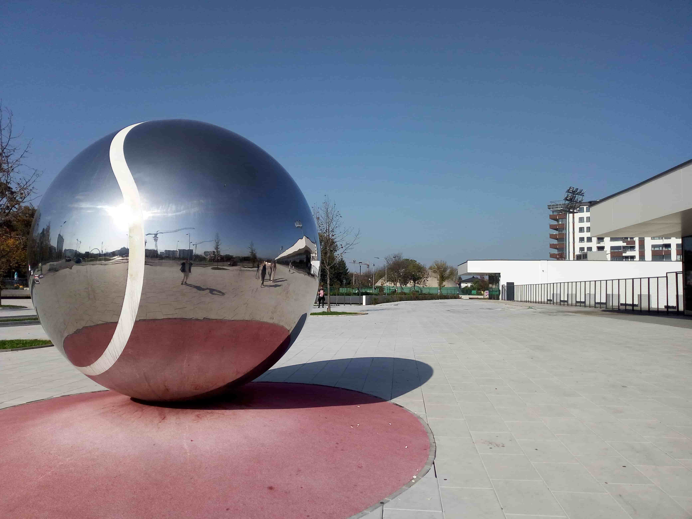
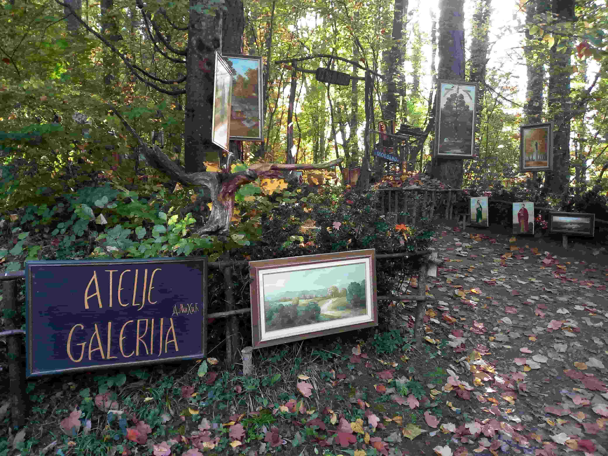
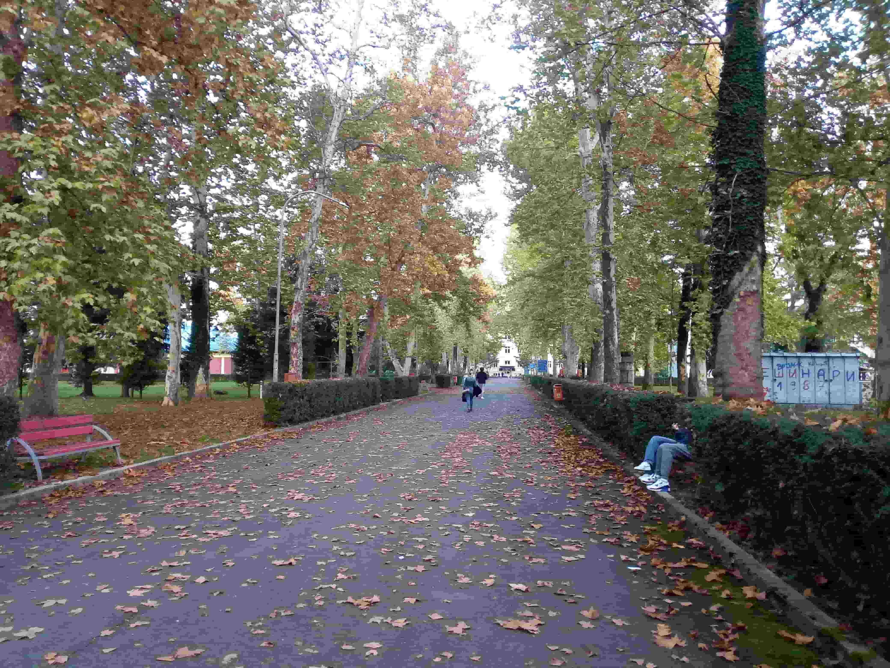
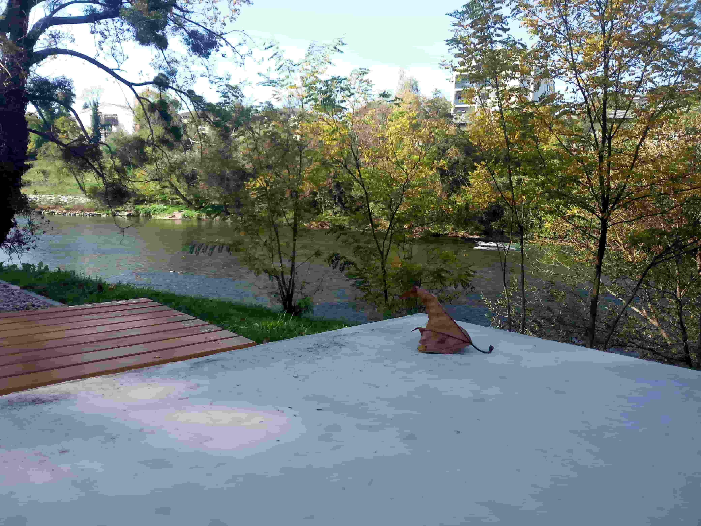

Banja Luka, Bosnia and Herzegovina
Nestled along the banks of the Vrbas River in northwestern Bosnia and Herzegovina, Banja Luka is a city where natural beauty, cultural heritage and everyday life come together. Known for its tree-lined avenues, green parks and relaxed atmosphere, the city has a distinctive character shaped by centuries of history and its close connection with the river. The emerald waters of the Vrbas, the surrounding landscapes and the city's lively cultural scene create an inviting atmosphere for exploration. From panoramic city views and outdoor art to the university campus and peaceful riverside scenery, Banja Luka offers many different ways to experience its character. Beyond its well-known landmarks, Banja Luka offers a glimpse into the cultural and social life of Bosnia and Herzegovina. Its public spaces, educational institutions and riverside surroundings reflect different aspects of the city's identity. Walking through its streets and exploring its surroundings reveals a place where history, nature and contemporary urban life exist side by side. This collection brings together my personal photographs and memories from Banja Luka.

City View
A collection of photographs capturing Banja Luka's urban landscape, architecture and distinctive city views.
Explore Photos ↗
Outdoor Art Exhibition
An outdoor exhibition presenting artistic works in the public spaces of Banja Luka.
Explore Photos ↗
University of Banja Luka
Photographs documenting the university campus, its buildings and academic surroundings.
Explore Photos ↗
Vrbas River
The emerald waters, natural scenery and peaceful riverside landscapes of the Vrbas River.
Explore Photos ↗